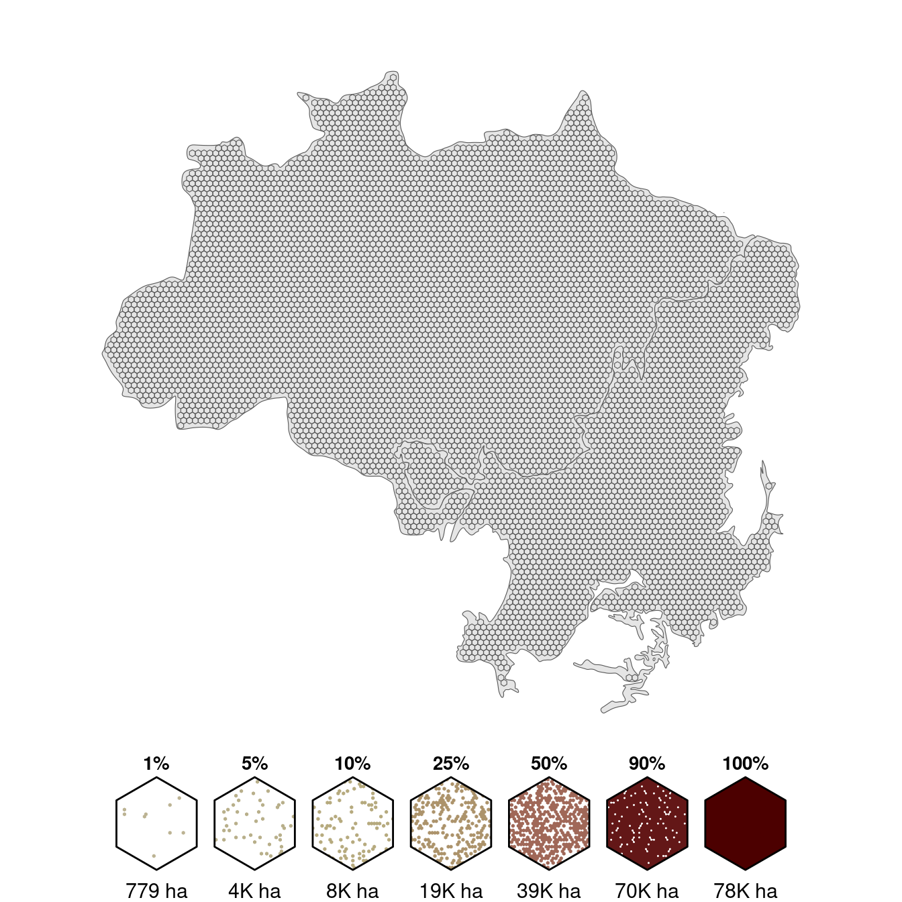
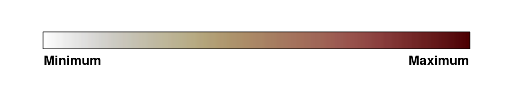
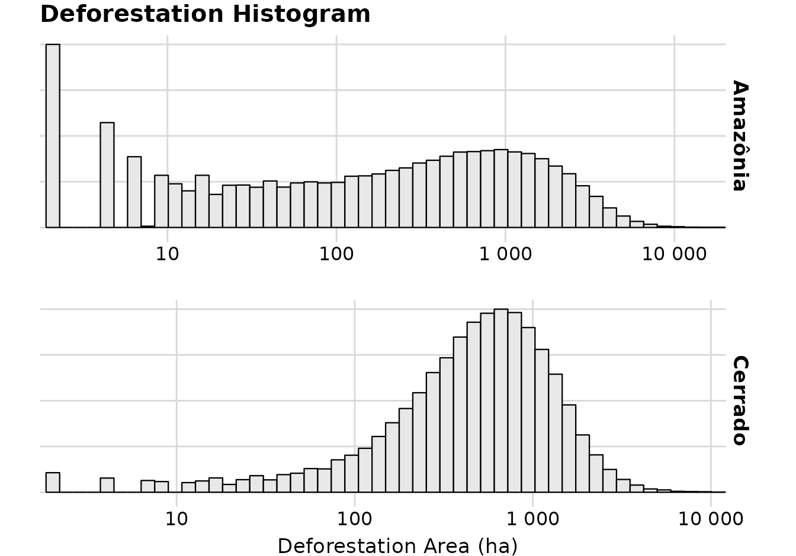
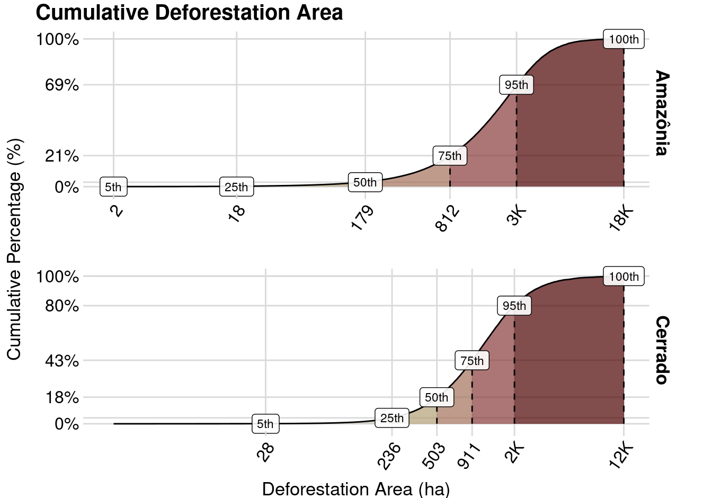
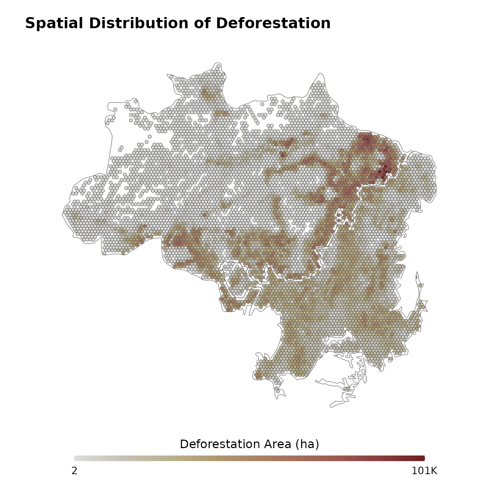
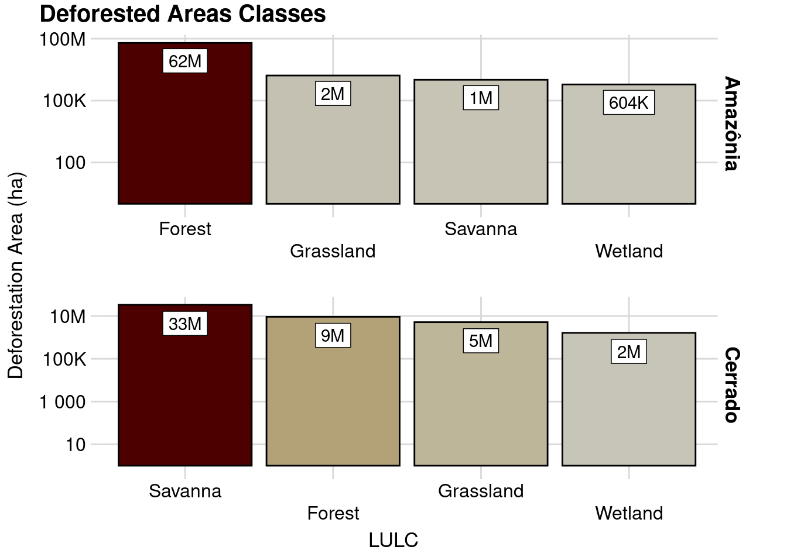
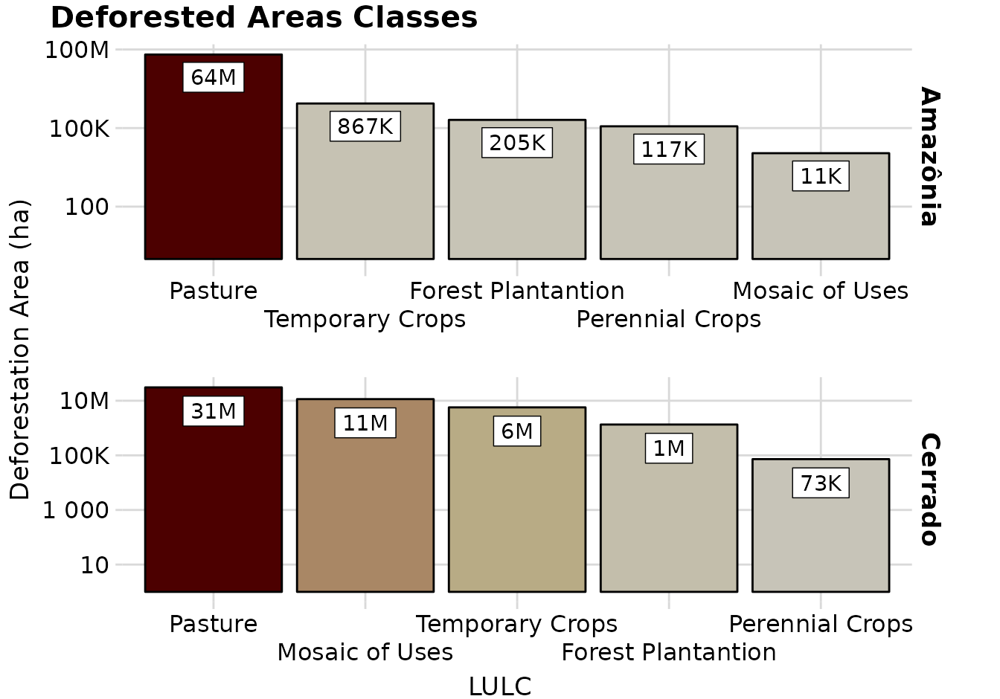
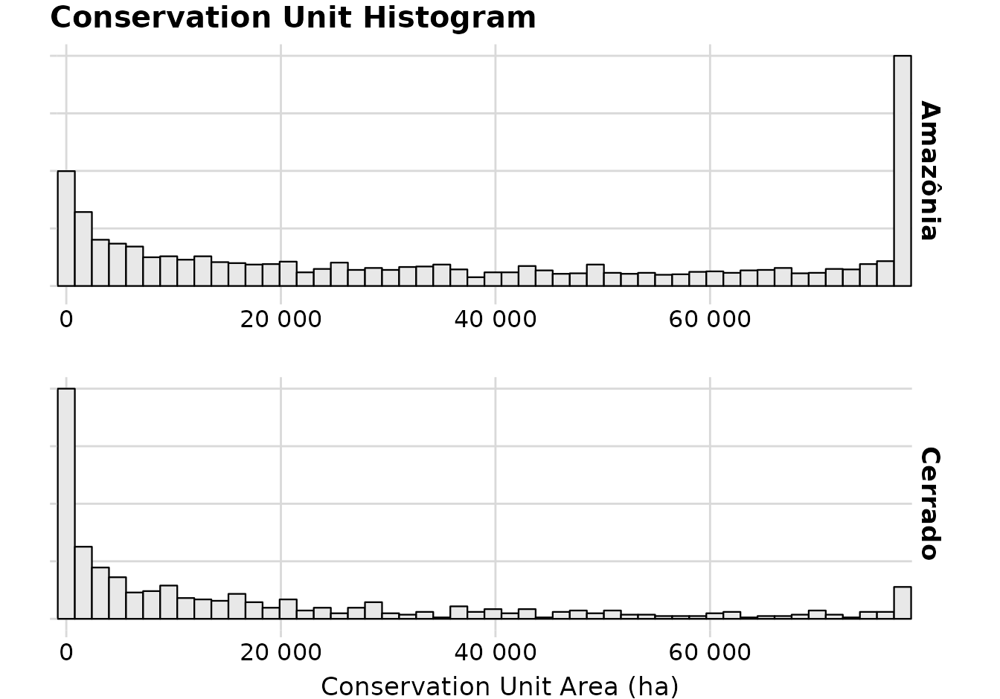
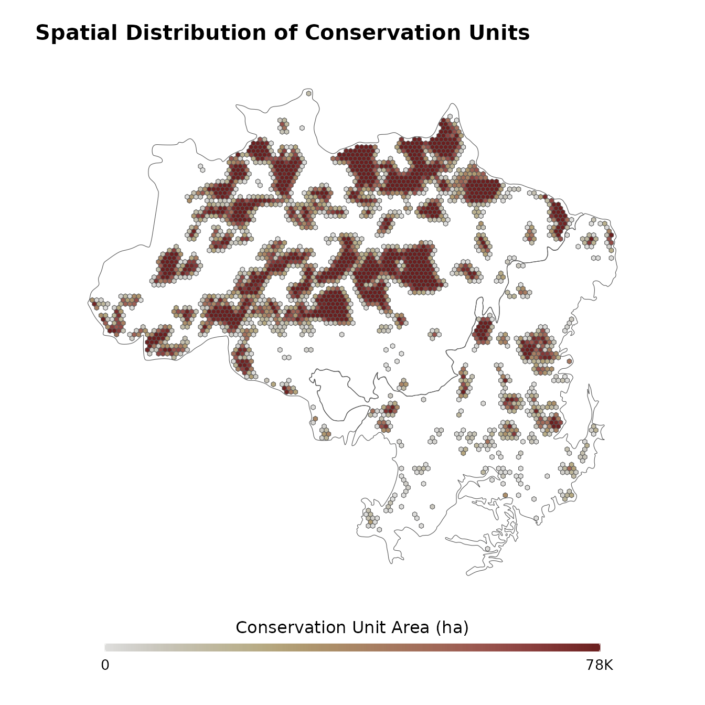
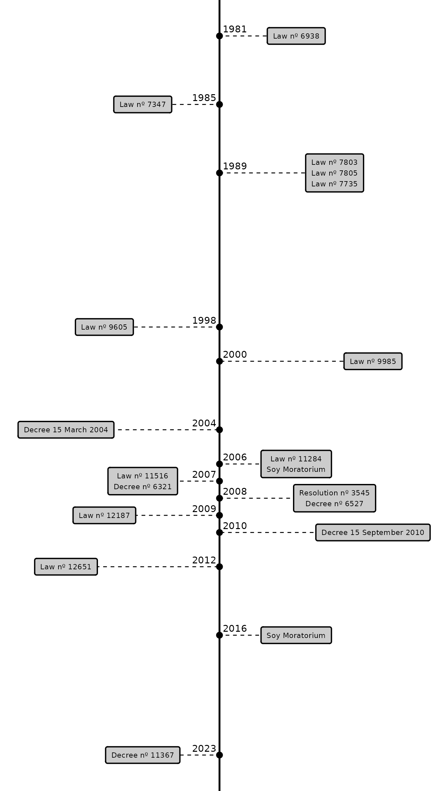

3 Results
3.1 Theoretical Model
The NVS Theoretical Model have the purpose to formally describe the phenomena manifestation process. Therefore, before presenting the model, it is necessary to revisit the concept of NVS being adopted.
The NVS, abbreviation for Natural Vegetation Suppression, is an action performed directly by humans, and consists of the transformation of an area occupied by natural vegetation. This transformation occurs by the removal of the natural vegetation to a degree in which the area is no longer recognized as a natural formation, by the human perception.
To describe the NVS Theoretical Model, I especulate about the causal mechanism that, when manifested, materializes the NVS.
I propose four phenomena that composes the causal mechanism of NVS:
- Value: It is the possible values that can be attributed to a certain natural vegetation, occuping a certain space at a certain time;
- Gains: The benefits that supressing a certain natural vegetation (in a certain space, at a certain time) may provide to the agent that is performing the action of supression;
- Losses: The drawbacks that may arise against the agent, as a concequence of its action of supression of a certain natural vegetation (in a certain space, at a certain time);
- Work: Is the physical manifestation of a social agent performing the action of natural vegetation suppression;
The causal mechanism is the relationship between the value of a natural vegetation, and the gain and losses of its suppression, followed the possibility of work. The NVS will be manifested when the causal mechanism is triggered, therefore, when there is a favorable opportunity, and there is the possibility of execution.
According to the ontological paradigm being adopted, this causal mechanism lies in the domain of the real. I assume that it is absolute, in the sense that it do not change over time and space, and that the analysed phenomena (the NVS) is manifested only when this causal mechanism is triggered.
The causal mechanism is trigerred when a social agent and the natural vegetation exists in the same space and time, and when the dillema of the supression arises. The context of the situation in which the causal mechanism is triggrered will define the characteristics of value, gains, losses and work. This means that while the causal mechanism do not change over time and space, it will be manifested as different forms, depending of the context. The idea developed in this paragraph depicts the actual domain of the adopted ontology paradigm.
The form in which the NVS causal mechanism will manifest changes according to the situation context. The value of a natural vegetation, the gains and losses from its supression, and the work demanded for its execution are never the same, they are situational. The value of a natural vegetation can be easily represented by cultural aspects of social agents, while gains and losses can be represented as material and social capital, and work can be related to technology and momentum.
However, how these aspects of the NVS causal mechanisms are perceived and interpreted by the social agents when it is trigerred is always partial. The social agent does not have access, or it is insensible, to certain values of the natural vegetation. The social agent has also a partial perception of gains and losses, it does not know all consequences of their action. At last, the work that executed the suppression is not always percepted, as it can be unintentional.
3.2 Sociological Analysis
In this section I show the identified social actors and how they relate with each other in the dispute over land, determined by NVS. The results will also be represented as diagrams, that will show the relations between the social actors, and the capital of each.
3.3 Statistical Analysis
In this section I present the results from the quantitative analysis, from the exploratory data analysis to the statistical model predictions and interpretation.
3.3.1 Exploratory Data Analysis
In this section I analyze each variable of my model. It is important to note that all quantitative analysis were performed in the data stored in the base grid. So the figures and tables do not show distributions of the raw observations/estimates, but the values that were transformed to fit the grid cells (Figure 3.1).
All visualizations about the variables follows a common color scale, to facilitate their interpretation along the document (Figure 3.2). The minimum values are represented by light gray color, values close to the median shows a yellow color, and maximum values as dark red color.

3.3.1.1 Natural Vegetation Suppression
The NVS is the phenomena of interest of this project.
Important
READ:
- https://ssrn.com/abstract=4063325
- https://doi.org/10.1086/597794
- https://doi.org/10.1111/j.1475-682X.2007.00200.x
In the grid of analysis, the minimum area of NVS is 2 ha for the Amazon and Cerrado, and the maximum area is 18000 ha a year for the Amazon, and 12000 ha a year in the Cerrado Table 3.1.
Warning: `includeHTML()` was provided a `path` that appears to be a complete HTML document.
✖ Path: ./figs/eda/deforestation_table.html
ℹ Use `tags$iframe()` to include an HTML document. You can either ensure `path` is accessible in your app or document (see e.g. `shiny::addResourcePath()`) and pass the relative path to the `src` argument. Or you can read the contents of `path` and pass the contents to `srcdoc`.| Deforestation Area (ha) | ||||||
| Minimum | Mean | Median | Maximum | Standard Deviation | Missing Values | |
|---|---|---|---|---|---|---|
| Amazônia | 2 | 624 | 179 | 18K | 1K | 0 |
| Cerrado | 2 | 675 | 503 | 12K | 666 | 0 |
The distribution of NVS area in the grid cells is heavily skewed towards smaller areas, specially in the Amazon, which also shows a high frequency of a diverse range of values Figure 3.3. The distribution of NVS for the Cerrado is less skewed, and show more frequent values close to 1000 ha a year Figure 3.3.

The cumulative NVS area shows that grid cells with high values of NVS accounts for the majority of the total NVS in a year, for the Amazon NVS from 3000ha to 18000 ha, which are the 25% highest values, accounts for 79% of all NVS Figure 3.4. For the Cerrado, NVS from 900 ha to 12000 ha, the 25% highest values, accounts for 57% of the total NVS Figure 3.4.

The spatial distribution of NVS shows a concentration in some regions of the Amazon, specially in areas in proximity to the Cerrado biome Figure 3.5. However, the distribution of NVS in the Cerrado shows a different pattern, where the NVS occurrence is spread in the whole biome Figure 3.5.

The NVS time series shows periods of increase of NVS in the Amazon from 1985 to 2003, followed by a consistent drop of NVS area after 2003 Figure 3.6. For the Cerrado, the NVS area have been decreasing since the start of the time series, with some periods of increase in 2004 and 2013.

The natural vegetation types that suffered suppression are Forests, Grasslands, Savannas and Wetlands. In the Amazon, the majority of NVS occurs over Forests, and in the Cerrado it occurrence is predominant over Savannas Figure 3.7.

The antropic land uses that followed after NVS are predominantly Pastures for both biomes Figure 3.8. However, Mosaic of Uses and Temporary Crops share a significant amount of NVS area in the Cerrado Figure 3.8.

3.3.1.2 Conservation Units
The creation of conservation units is a main strategy to protect natural landscapes in Brazil. The creation of protected areas in Brazil dates from 1896, with the creation of the first National Park in São Paulo (Drummond, Andrade Franco, and Ninis 2009), however, it was only in 2000 that a law was approved to create a system to organize and regulate the UCs, named as the National System of Conservation Units (SNUC) (Drummond, Andrade Franco, and Ninis 2009; Borges, Rezende, and Pereira 2009; Moreira et al. 2021). The SNUC comprises federal, state and municipal UCs of different characteristics (Borges, Rezende, and Pereira 2009).
In the grid of analysis, the maximum area occupied by UC in a single cell is 78000 ha, which is the total cell area Figure 3.9. The majority of cells do not present any area of UC Figure 3.9.
Warning: `includeHTML()` was provided a `path` that appears to be a complete HTML document.
✖ Path: ./figs/eda/uc_table.html
ℹ Use `tags$iframe()` to include an HTML document. You can either ensure `path` is accessible in your app or document (see e.g. `shiny::addResourcePath()`) and pass the relative path to the `src` argument. Or you can read the contents of `path` and pass the contents to `srcdoc`.| Conservation Unit (ha) | ||||||
| Minimum | Mean | Median | Maximum | Standard Deviation | Missing Values | |
|---|---|---|---|---|---|---|
| Amazônia | 0 | 574 | 0 | 78K | 6K | 0 |
| Cerrado | 0 | 148 | 0 | 78K | 3K | 0 |
When analyzing the grid cells with any cover of UC, we observe that in the Amazon, most those grid cells are fully occupied by UC Figure 3.10. The situation is very different for the Cerrado, where most pixels occupied by UC shows small areas, indicating that small UC are more frequent for this biome Figure 3.10.

The spatial distributions of UC in the Amazon and Cerrado are very different. In the Amazon it is possible to observe a large number of big UC, while in Cerrado most of UC are smaller as scattered around the biome Figure 3.11.

The time series of accumulated UC area over time shows a steady increase from 1985 to 2010, followed by a period of stagnation of the creation of new UC for the Amazon and Cerrado Figure 3.12.

3.3.1.3 Policies
There are a large number of laws, decrees, resolutions and commitments made in Brazil with the objective to decrease NVS. These are organized in a timeline with some key policies related to NVS Figure 3.13.

The details of these policies are summarized in the Table 3.2, which shows the beggining and end of the policy, their spatial coverage and a general description.
Warning: `includeHTML()` was provided a `path` that appears to be a complete HTML document.
✖ Path: ./figs/policies_table.html
ℹ Use `tags$iframe()` to include an HTML document. You can either ensure `path` is accessible in your app or document (see e.g. `shiny::addResourcePath()`) and pass the relative path to the `src` argument. Or you can read the contents of `path` and pass the contents to `srcdoc`.| Start Date | End Date | Coverage | Description | |
|---|---|---|---|---|
| 1981 | ||||
| Law nº 6938 | 1981-08-31 | — | Brazil | Establishes the National Environmental Policy, specifies its purposes and mechanisms of formulation and application, and makes other provisions. |
| 1985 | ||||
| Law nº 7347 | 1985-07-24 | — | Brazil | Defines the public civil action of liability for damages caused to the environment, to the consumer, to goods and rights of artistic, aesthetic, historical, tourist and landscape value and makes other provisions. |
| 1989 | ||||
| Law nº 7803 | 1989-07-18 | — | Brazil | Amends the Forest Code of 1965 (Law nº 4771), defines regulations of use and commercialization of chainsaws. |
| Law nº 7805 | 1989-07-18 | — | Brazil | Creates the mining permission regulation. |
| Law nº 7735 | 1989-02-22 | — | Brazil | Creates the Brazilian Institute for the Environment and Renewable Natural Resources (IBAMA) and makes other provisions. |
| 1998 | ||||
| Law nº 9605 | 1998-02-12 | — | Brazil | Provides for criminal and administrative sanctions arising from conduct and activities harmful to the environment, and makes other provisions. |
| 2000 | ||||
| Law nº 9985 | 2000-07-18 | — | Brazil | Regulates art. 225, § 1, items I, II, III and VII of the Federal Constitution, establishes the National System of Nature Conservation Units (SNUC) and makes other provisions. |
| 2004 | ||||
| Decree 15 March 2004 | 2004-03-15 | 2019-11-28 | Legal Amazon | Amends the Decree of July 3, 2003, which creates the Permanent Interministerial Working Group with the purpose of proposing measures and coordinating actions aimed at reducing deforestation rates in the Legal Amazon (PPCDAm), and makes other provisions. |
| 2006 | ||||
| Law nº 11284 | 2006-03-02 | — | Brazil | Provides for the management of public forests for sustainable production; establishes, within the structure of the Ministry of the Environment, the Brazilian Forest Service (SFB); creates the National Forest Development Fund (FNDF). |
| Soy Moratorium | 2006-07-24 | — | Amazon Biome | Industries and exporters associated with ABIOVE and ANEC commit not to purchase soybeans from newly deforested areas (after 24 of July of 2006). |
| 2007 | ||||
| Law nº 11516 | 2007-08-28 | — | Brazil | Provides for the creation of the Chico Mendes Institute for Biodiversity Conservation (ICMBio). |
| Decree nº 6321 | 2007-12-21 | — | Amazon Biome | Provides for actions related to the prevention, monitoring and control of deforestation in the Amazon Biome. Creates lists of municipalities with high deforestation rates. |
| 2008 | ||||
| Resolution nº 3545 | 2008-02-29 | 2021-05-01 | Amazon Biome | Amends MCR 2-1 to establish a requirement for of documentation proving the environmental conditions, for the purpose of agricultural financing in the Amazon Biome. |
| Decree nº 6527 | 2008-08-01 | — | Legal Amazon | Provides for the establishment of the Amazon Fund by the National Bank for Economic and Social Development (BNDES). |
| 2009 | ||||
| Law nº 12187 | 2009-12-29 | — | Brazil | Institutes the National Policy on Climate Change (PNMC) and makes other provisions. |
| 2010 | ||||
| Decree 15 September 2010 | 2010-09-15 | — | Cerrado Biome | Institutes the Action Plan for the Prevention and Control of Deforestation and Burning in the Cerrado Biome (PPCerrado). |
| 2012 | ||||
| Law nº 12651 | 2012-05-25 | — | Brazil | Provides for the protection of native vegetation. Establishes the new Forest Code. |
| 2016 | ||||
| Soy Moratorium | 2016-05-09 | — | Amazon Biome | Renew the soy moratorium indefinitely, and updates the limit date of deforestation to 22 July 2008. |
| 2023 | ||||
| Decree nº 11367 | 2023-01-01 | — | Brazil | Establishes the Permanent Interministerial Commission for the Prevention and Control of Deforestation, re-establishes the Action Plan for the Prevention and Control of Deforestation in the Legal Amazon (PPCDAm) and provides for the Action Plans for the Prevention and Control of Deforestation in the Cerrado, the Atlantic Forest, the Caatinga, the Pampa and the Pantanal. |
3.4 Final results
The final results section will present the divergences and convergences between the qualitative and quantitative results, summarizing the findings in tables and diagrams.
References
Borges, Luís Antônio Coimbra, José Luiz Pereira de Rezende, and José Aldo Alves Pereira. 2009. “Evolução Da Legislação Ambiental No Brasil.” Revista Em Agronegócio e Meio Ambiente 2 (3): 447–66.
Drummond, Jose Augusto, Jose Luiz de Andrade Franco, and Alessandro Bortoni Ninis. 2009. “Brazilian Federal Conservation Units: A Historical Overview of Their Creation and of Their Current Status.” Environment and History 15 (4): 463–91. https://doi.org/10.3197/096734009x12532652872036.
Moreira, Kátia Soares, José Alves Junqueira Júnior, Paulo Eduardo de Oliveira Sousa, Heitor Soares Moreira, and Danielle Pereira Baliza. 2021. “A Evolução Da Legislação Ambiental No Contexto Histórico Brasileiro.” Research, Society and Development 10 (2). https://doi.org/10.33448/rsd-v10i2.12087.